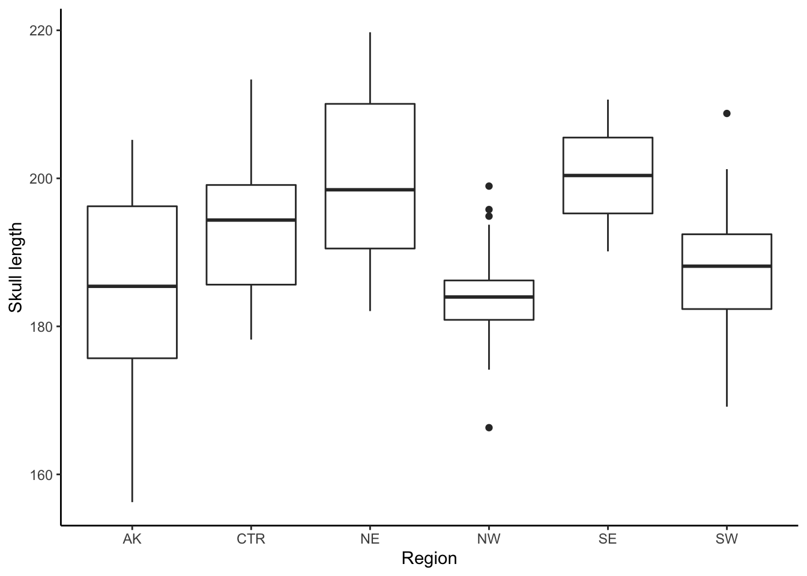
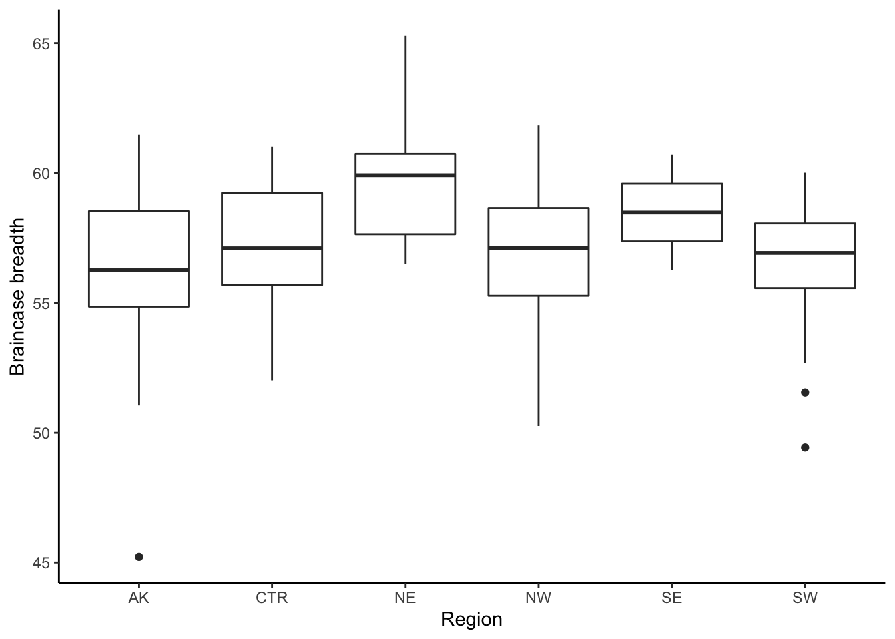

5 Geographic variation in coyote skulls
There are many ways to test for geographic differences statistically. In this lab, we will test for differences between
AK and the rest of the samples;
NW and NE; and
NW and SW.
First we will visualize the data in separate boxplots for each variable, with one box for each of the five regions. We create the boxplots using the ggplot() function. If you have not used ggplot previously, we recommend that you work through a guide on how to make plots with ggplot.
- The following code creates a boxplot with skull length as a function of region (in other words, the boxplot shows the skull length for each region).
ggplot(coyote, aes(x = Region, y = SL_mm)) + geom_boxplot()+
theme_classic() + ylab("Skull length")
- We also create a boxplot with braincase breadth as a function of region (the boxplot shows the braincase breadth for each region).
ggplot(coyote, aes(x = Region, y =BB_mm)) + geom_boxplot()+
theme_classic() + ylab("Braincase breadth")## Warning: Removed 1 rows containing non-finite values (stat_boxplot).
5.1 Analysis of variance (ANOVA)
Analysis of Variance (ANOVA) is a statistical test to determine whether two or more population means are different. There are several versions of the ANOVA e.g., one-way ANOVA, two-way ANOVA, etc.
In this section, we conduct one-way ANOVA on the comparisons for both variables (that is the skull length and the braincase breadth) and summarize the results in tables.
- We first do the comparison for the SL_mm variable. We add a a variable
GroupsAKRestto the data where all other regions apart fromAKis taken asothers.
coyoteA <- mutate(coyote, GroupsAKRest = ifelse(Region == "AK", "AK", "Others"))
coyoteA- Now we define a model with
SL_mmas a function ofGroupsAKRest.
modelSL<- lm(SL_mm~GroupsAKRest, data = coyoteA)Now to get the details of the model described in the previous line, we will have to use the summary() function
summary(modelSL)##
## Call:
## lm(formula = SL_mm ~ GroupsAKRest, data = coyoteA)
##
## Residuals:
## Min 1Q Median 3Q Max
## -28.9123 -7.6644 -0.7236 6.6149 28.5031
##
## Coefficients:
## Estimate Std. Error t value Pr(>|t|)
## (Intercept) 185.168 2.730 67.823 <2e-16 ***
## GroupsAKRestOthers 6.066 2.961 2.049 0.0427 *
## ---
## Signif. codes: 0 '***' 0.001 '**' 0.01 '*' 0.05 '.' 0.1 ' ' 1
##
## Residual standard error: 11.58 on 118 degrees of freedom
## Multiple R-squared: 0.03434, Adjusted R-squared: 0.02616
## F-statistic: 4.197 on 1 and 118 DF, p-value: 0.04273- At this point we can do the analysis of variance for AK and the rest of the regions. The ANOVA table can be found by running the code:
anova(modelSL)## Analysis of Variance Table
##
## Response: SL_mm
## Df Sum Sq Mean Sq F value Pr(>F)
## GroupsAKRest 1 563 563.03 4.1965 0.04273 *
## Residuals 118 15832 134.17
## ---
## Signif. codes: 0 '***' 0.001 '**' 0.01 '*' 0.05 '.' 0.1 ' ' 1- We can replace
SL_mmbyBB_mmto do a similar comparison in the braincase breadth forAKand the other regions. Let me call thismodelBB.
modelBB <- lm(BB_mm~GroupsAKRest, data = coyoteA )To get details of modelBB we use the summary() function
summary(modelBB)##
## Call:
## lm(formula = BB_mm ~ GroupsAKRest, data = coyoteA)
##
## Residuals:
## Min 1Q Median 3Q Max
## -10.9907 -1.1744 -0.1647 1.9002 7.8721
##
## Coefficients:
## Estimate Std. Error t value Pr(>|t|)
## (Intercept) 56.2069 0.6661 84.384 <2e-16 ***
## GroupsAKRestOthers 1.1996 0.7230 1.659 0.0998 .
## ---
## Signif. codes: 0 '***' 0.001 '**' 0.01 '*' 0.05 '.' 0.1 ' ' 1
##
## Residual standard error: 2.826 on 117 degrees of freedom
## (1 observation deleted due to missingness)
## Multiple R-squared: 0.02299, Adjusted R-squared: 0.01464
## F-statistic: 2.753 on 1 and 117 DF, p-value: 0.09977- The ANOVA table can be found by running the code:
anova(modelBB)## Analysis of Variance Table
##
## Response: BB_mm
## Df Sum Sq Mean Sq F value Pr(>F)
## GroupsAKRest 1 21.98 21.9837 2.7527 0.09977 .
## Residuals 117 934.38 7.9861
## ---
## Signif. codes: 0 '***' 0.001 '**' 0.01 '*' 0.05 '.' 0.1 ' ' 1- We also conduct the ANOVA for NW and NE in a similar manner as was done above.
We would have to filter the
coyotedata using thefilter()function in thedplyrpackage to select theNWandNEregions. We will save this data ascoyoteNW_NE.
coyoteNW_NE <- coyote %>% filter(Region == "NW" | Region == "NE")- Now we define a model
SL_mmas a function of the two regionsNWandNE. Let us call thismodelSL1to different it from the previous model.
modelSL1 <- lm(SL_mm~Region, data = coyoteNW_NE)
summary(modelSL1)##
## Call:
## lm(formula = SL_mm ~ Region, data = coyoteNW_NE)
##
## Residuals:
## Min 1Q Median 3Q Max
## -18.3207 -5.7213 -0.8156 8.3874 19.3472
##
## Coefficients:
## Estimate Std. Error t value Pr(>|t|)
## (Intercept) 200.390 2.216 90.418 < 2e-16 ***
## RegionNW -15.998 3.262 -4.904 1.9e-05 ***
## ---
## Signif. codes: 0 '***' 0.001 '**' 0.01 '*' 0.05 '.' 0.1 ' ' 1
##
## Residual standard error: 10.16 on 37 degrees of freedom
## Multiple R-squared: 0.3939, Adjusted R-squared: 0.3775
## F-statistic: 24.05 on 1 and 37 DF, p-value: 1.897e-05- The Anova table for
modelSL1can also be obtained:
anova(modelSL1)## Analysis of Variance Table
##
## Response: SL_mm
## Df Sum Sq Mean Sq F value Pr(>F)
## Region 1 2480.6 2480.58 24.049 1.897e-05 ***
## Residuals 37 3816.5 103.15
## ---
## Signif. codes: 0 '***' 0.001 '**' 0.01 '*' 0.05 '.' 0.1 ' ' 1- We do a similar model for
BB_mmwith the two regionsNWandNE. Let us call thismodelBB1to different it from the previous model.
modelBB1<- lm(BB_mm~Region, data = coyoteNW_NE )
summary(modelBB1)##
## Call:
## lm(formula = BB_mm ~ Region, data = coyoteNW_NE)
##
## Residuals:
## Min 1Q Median 3Q Max
## -6.6929 -1.8178 0.2335 1.3519 5.8284
##
## Coefficients:
## Estimate Std. Error t value Pr(>|t|)
## (Intercept) 59.4502 0.5478 108.518 < 2e-16 ***
## RegionNW -2.4973 0.8064 -3.097 0.00372 **
## ---
## Signif. codes: 0 '***' 0.001 '**' 0.01 '*' 0.05 '.' 0.1 ' ' 1
##
## Residual standard error: 2.511 on 37 degrees of freedom
## Multiple R-squared: 0.2058, Adjusted R-squared: 0.1844
## F-statistic: 9.59 on 1 and 37 DF, p-value: 0.003721- The Anova table for
modelBB1can also be obtained by the code:
anova(modelBB1)## Analysis of Variance Table
##
## Response: BB_mm
## Df Sum Sq Mean Sq F value Pr(>F)
## Region 1 60.445 60.445 9.5904 0.003721 **
## Residuals 37 233.197 6.303
## ---
## Signif. codes: 0 '***' 0.001 '**' 0.01 '*' 0.05 '.' 0.1 ' ' 111.Now we want to do the comparison for NW and SW.
We would have to filter the data using the filter() function in dplyr to select the NW and SW regions. Let us save this data as coyoteNW_SW.
coyoteNW_SW <- coyote %>% filter(Region == "NW" | Region == "SW")- We define a model for
SL_mmwith the regions beingNWandSW. Let us call this modelmodelSL2.
modelSL2 <- lm(SL_mm ~Region, data = coyoteNW_SW )
summary(modelSL2)##
## Call:
## lm(formula = SL_mm ~ Region, data = coyoteNW_SW)
##
## Residuals:
## Min 1Q Median 3Q Max
## -18.5229 -4.6935 0.2041 4.4782 21.0944
##
## Coefficients:
## Estimate Std. Error t value Pr(>|t|)
## (Intercept) 184.392 1.951 94.534 <2e-16 ***
## RegionSW 3.282 2.349 1.397 0.168
## ---
## Signif. codes: 0 '***' 0.001 '**' 0.01 '*' 0.05 '.' 0.1 ' ' 1
##
## Residual standard error: 8.275 on 56 degrees of freedom
## Multiple R-squared: 0.03369, Adjusted R-squared: 0.01644
## F-statistic: 1.953 on 1 and 56 DF, p-value: 0.1678- The Anova table for
modelSL2can be obtained by running this code:
anova(modelSL2)## Analysis of Variance Table
##
## Response: SL_mm
## Df Sum Sq Mean Sq F value Pr(>F)
## Region 1 133.7 133.714 1.9525 0.1678
## Residuals 56 3835.0 68.482- We again define a model for
BB_mm. Let us call this modelmodelBB2.
modelBB2<- lm(BB_mm ~Region, data = coyoteNW_SW )
summary(modelBB2)##
## Call:
## lm(formula = BB_mm ~ Region, data = coyoteNW_SW)
##
## Residuals:
## Min 1Q Median 3Q Max
## -7.0996 -1.2255 0.2824 1.5581 4.8819
##
## Coefficients:
## Estimate Std. Error t value Pr(>|t|)
## (Intercept) 56.9529 0.5604 101.63 <2e-16 ***
## RegionSW -0.4198 0.6775 -0.62 0.538
## ---
## Signif. codes: 0 '***' 0.001 '**' 0.01 '*' 0.05 '.' 0.1 ' ' 1
##
## Residual standard error: 2.378 on 55 degrees of freedom
## (1 observation deleted due to missingness)
## Multiple R-squared: 0.006932, Adjusted R-squared: -0.01112
## F-statistic: 0.3839 on 1 and 55 DF, p-value: 0.5381- The Anova table for
modelBB2can be obtained by running this code:
anova(modelBB2)## Analysis of Variance Table
##
## Response: BB_mm
## Df Sum Sq Mean Sq F value Pr(>F)
## Region 1 2.17 2.1702 0.3839 0.5381
## Residuals 55 310.89 5.6526